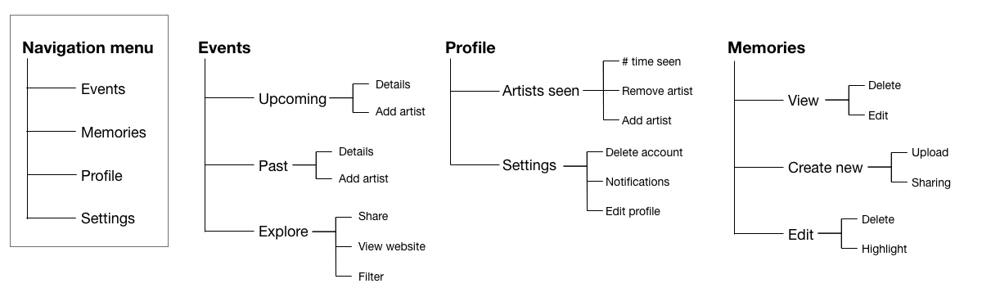
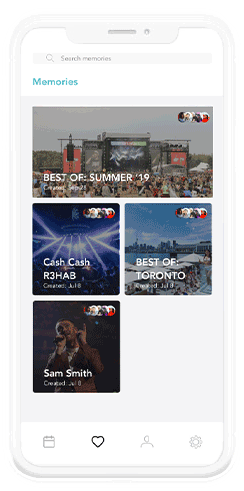

A familiar problem
As a huge fan of concerts and festivals, I haven’t found a solution for efficiently tracking all the
artists I’ve seen or sharing high-quality media with my friends. Currently, my friends and I save
screenshots of the lineup to keep track of who we’ve seen or use social media platforms, which often
reduces
video quality, to share content.
Defining the audience
Users were separated into 3 user groups to better understand the needs/goals and how different each group
would interact with the app.
For example, someone who attends many concerts a year will likely be more interested in event
recommendations than someone who attends 1-2 concerts a year. Survey findings confirmed which features
of the app appealed the most and the least to each user group.
Illustration of people dancing, drawn by me
Level 1
Attends 1-3 events per year. Will only buy tickets for artists they love and are more
likely able to
remember all the artists they’ve seen and when.
Level 2
Attends 4-9 concerts/festivals each year. Looks for shows to attend and follows their
favourite
artists tour dates or major events in their city.
Level 3
Attends 10+ concerts/festivals per year. Will likely follow their favourite artists
on tour.
Features
I used a survey to determine which features should be essential and which are nice-to-haves.
I wanted the app to be more than just a record-keeping platform and instead be able to capture the full
experience before, during, and after the concert. I brainstormed how to expand the core features and
asked the same survey participants to rank each feature.
Intuitively display event statistics
Tracks the number of concerts attended, artists seen live, and how many times. Links to streaming
profile of each artist.
Store and share high-quality content
A method for uploading, sharing, and viewing concert footage with our friends, using a public
feed or private social-sharing links.
Recommendations for upcoming concerts
Personalized based on past attendance and music taste.
Information architecture

Breakdown of the information architecture and user flow.
Low-fi Wireframes

Low fidelity wireframes
User test findings
10 rounds of user tests were conducted to identify frustrations or confusions when navigating. The findings
from user tests brought me back to the drawing board to answer some new questions I thought of.
- Sub-menu navigation in Events section was confusing.
- HMW make it more intuitive so that users can swipe left/right to access 'Past' and 'Explore'
events?
- What other methods of displaying sub-menus can be used?
- HMW create more inclusive and accesible design?
- Users questioned why they would use the Memories function over built-in photo gallery app.
- HMW better communicate the high-quality sharing feature?
- HMW integrate a more social aspect into it and will that make the feature more
worthwhile/desirable?
- HMW create more ethical designs so that users can easily remove photos they don't want shared
(especially by friends)?
- Concert and artist tracker under profile section was difficult to navigate
- HMW find a balance between functionality and visual appearance?
- HMW display the user's statistics intuitivley?
A/B testing
A/B testing was conducted on the Profile page because that is the core functionality of the app. After
studying how 10 users interact with the wireframes, I found that:
70% of users interacted with wireframe A with more ease than with wireframe B as wireframe A looks more like
a standard profile page and has simplier navigation gestures.

Wireframes for A/B testing
Visual Design
When we look back at our nostalgic concert videos, our screens often flash with blue or purple strobe lights.
I wanted to resemble this feeling and chose blue over purple as it’s more subtle, allowing the images to be
the primary focal point. A simple sans-serif font family like Avenier was chosen to keep the use of images
as the primary focal point.

A simple colorscheme and font family was used to compliment the use of stock photos.
Hi-fi mockups

Shows a grid of all the upcoming performances.

Shows a grid of all the performances the user has attended. Tapping on each card
will show users
the performers.

Recommended upcoming performances that might be of interest to users.

Tap on any event card to view the performers.

Users can swipe on each artist to add them to their 'seen' list.

Successfully added to the user's 'seen' list.
Iterations
Looking at the navigation of other social sharing applications, I tested out what user's opinions were on
- Drop-down menus on tap
- Drop-down menus on drag
- Swipe between screens
- 3D tap to access sub-menu

An on-tap drop-down menu was preferred over the swiping. Label and highlight
added to navigation menu.

Drop-down sub-menu - took inspiration from Instagram's switching accounts
functionality.

Upper-right shows users who they've shared each memory with.

3D touch is applied on a memory to get an overview of the images inside and to
make quick edits.

A quick look inside one of the memories